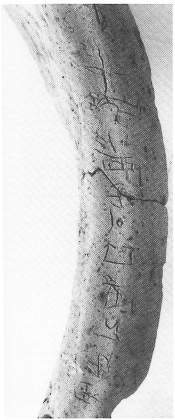
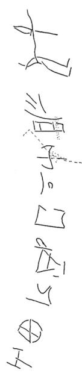

-
PEZb3
Names
Aliases for the inscription.
PEZb3, PE Zb 3
Support
Type of Object.
Clay vessel
Location
Site where object was found.
Petras
Findspot
Location at Site.
Unavailable


# "Row Index", "Line Index", "Word Index", "Syllabogram", "Status of Reading"
# R L W I S
# 1 0 1 PA certain
1 1 0 A none
1 1 0 KA none
1 1 0 RA none
1 1 0 KI none
1 1 0 TA none
1 1 0 NA none
1 1 0 SI none
1 1 0 JA none
2 1 0 SE none
3 1 0 VIR+[?] none
4 1 0 ZA none
Scribe
Writer of Inscription.
Unavailable
Context
Approximate Date of Inscription.
Late Minoan IB
1500-1450 BCE
Dimensions
Height x Length x Thickness.
Catalogue
Museum Reference Number.
Readings
Linear A Transcription
A Linear A transcription with words parsed separately.
Line breaks match the inscription.
𐘇𐘾𐘴𐘸𐘳𐘅𐘤𐘱
𐘈
𐙇
𐘍
ASCII Transcription
An ASCII transcription with words parsed separately.
Line breaks match the inscription.
AKARAKITANASIJA
SE
VIR+[?]
ZA
Linear A Tabulation
A Linear A transcription with words parsed separately.
Line breaks are logical, e.g. to represent a list.
𐘇𐘾𐘴𐘸𐘳𐘅𐘤𐘱𐘈𐙇𐘍
ASCII Tabulation
An ASCII transcription with words parsed separately.
Line breaks are logical, e.g. to represent a list.
AKARAKITANASIJASEVIR+[?]ZA
Commentaries
PE
Zb 3
, pithos, inscribed on the room (Siteia Mus. 9102; Tsipopoulou & Hallager 1996: 31,
34-36), on the Central Court, west of the northern column base (LM IB
context). The pithos is approximately 0.96 m high.
A-KA-RA
KI-TA-NA-SI-JA-SE VIR+ZA
The authors determine that the last
two signs, SE and VIR+ZA, were added by a different writer; the
ligature is unique.
Commentary © John Younger
References